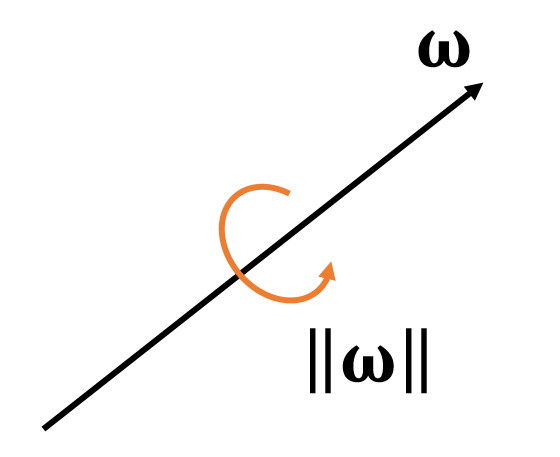
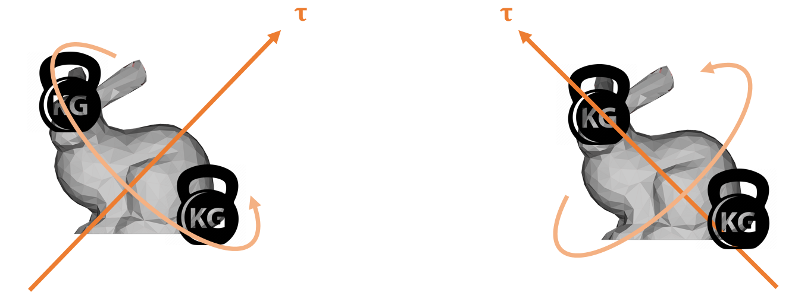
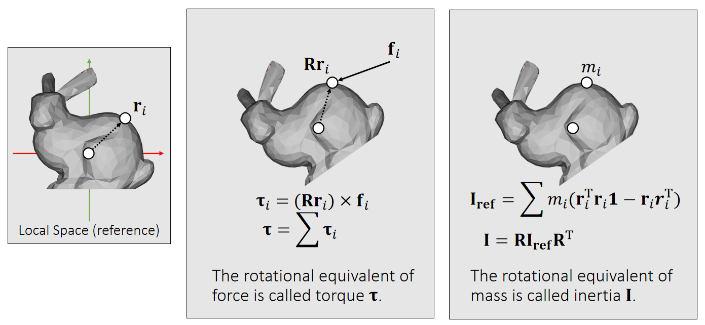

P27
符号定义
角度
Now we choose quaternion \(\mathbf{q}\) to represent theorientation, i.e., the rotation from the reference to the current.
💡 旋转的表示比较独立，单独放在最后link，避免破坏整体的结构性。最后结论是四元数表示方法。

角速度
We use a 3D vector \(\mathbf{\omega}\) to denote angular velocity.
$$
\begin{cases} \text{The direction of } \mathbf{\omega} \text{ is the axis.} \\
\text{The magnitude of } \mathbf{\omega} \text{ is the speed.}
\end{cases}
$$

P3
力矩 torque \(\mathbf{τ} \)
A torque is the rotational equivalent of a force. It describes the rotational tendency caused by a force.
✅ Torque：力矩，造成物体旋转的趋势。类比于Force：力，造成物体运动的趋势。

✅ \(\mathbf{Rr} _i\)：当前状态下质心到作用点的向量
\(\mathbf{τ} _i\) is perpendicular to both vectors: \(\mathbf{Rr} _i\) and \(\mathbf{f} _i\).
✅ 力矩的方向决定了旋转轴的方向，由叉差乘得到
\(\mathbf{τ} _i\) is porportional to ||\(\mathbf{Rr} _i\)|| and ||\(\mathbf{f} _i\)||.
\(\mathbf{τ} _i\) is porportional to \(\sin \theta\).
(\(\theta\) is the angle between two vectors.)
✅ 力矩的大小决定旋转的快慢。
| \(\mathbf{τ} _i\longleftarrow (\mathbf{Rr} _i)\times \mathbf{f} _i\) |
|---|
P6
inertia tensor
Similar to mass, an inertia tensor describes the resistance to rotational tendency caused by torque. But different from mass, it’s not a constant.
✅ inertia 也与自身的状态相关

Which side receives greater resistance?
✅ 两图的力矩大小相同，但产生的旋转不同
inertia 看作是对运动的抵抗，其效果与力矩的方向有关，因此不是常数
P7
It’s a matrix! The mass inverse is the resistance (just like mass).
✅ 用于旋转的质量不再是实数，而是矩阵，称为 Inertia 矩阵，用 \(\mathbf{I}\) 来标记 Inertia 矩阵，其中 \(\mathbf{I}_{ref}\)为参考状态，\(\mathbf{I}\) 为当前状态，\(\mathbf{I}\) 是 \(3\times 3\) 矩阵。
| reference state | current state |
|---|---|
 |  |
| \(\mathbf{I} _{\mathbf{ref} }=\sum m_i(\mathbf{r} _i^\mathbf{T} \mathbf{r} _i\mathbf{1} −\mathbf{r} _i\mathbf{r} _i^\mathbf{T} )\) \(\mathbf{1}\) is the 3-by-3 identity. | \(\mathbf{I} =\sum m_i(\mathbf{r} _i^\mathbf{T}\mathbf{R} ^\mathbf{T}\mathbf{Rr} _i\mathbf{1} −\mathbf{Rr} _i\mathbf{r} _i^\mathbf{T} \mathbf{R^T} )\) \(\quad=\sum m_i(\mathbf{Rr} _i^\mathbf{T}\mathbf{r} _i\mathbf{1R} ^\mathbf{T} −\mathbf{Rr} _i\mathbf{r} _i^\mathbf{T} \mathbf{R^T} )\) \(\quad=\sum m_i\mathbf{R}(\mathbf{r}_i^\mathbf{T}\mathbf{r}_i\mathbf{1}−\mathbf{r}_i\mathbf{r}_i^\mathbf{T} ) \mathbf{R^T}\) \(\quad=\mathbf{RI _{ref}R^T}\) |
✅ 不需要每次都根据当前状态计算，而是基于一个已经算好的ref状态的 inertia快速得出。
P29
更新法则
| Translational (linear) | Rotational (Angular) | |
|---|---|---|
| Updafe |  |  |
| states | Velocity \(\mathbf{v}\) Position \(\mathbf{x}\) | Angular velocity \(\mathbf{ω} \) Quaternion \(\mathbf{q}\) |
| Physical Quantities | Mass \(\mathbf{M}\) Force \(\mathbf{f}\) | Inertia \(\mathbf{I} \) Torque \(\mathbf{τ} \) |
✅ 平移： \(加速度 = \frac{力}{质量}\) ，旋转： \(加速度 =\frac{力矩}{\text{Inertia}}\)
✅ \(q\)是四元数，代表物体的旋转状态
✅ \(q_1\times q_2\)不是叉乘，而是四元数普通乘法
✅ \(\begin{bmatrix} 0 & \frac{\bigtriangleup t}{2} & w^{(1)} \end{bmatrix}\)是一个四元数，0为实部，后面为虚部
❗ 算完\(q^{[1]}\)的之后要对它 Normalize
🔎 由\(q^{[0]}\)到\(q^{[1]}\)的更新公式的推导过程见Affer Class Reading（Appendix B）
❓ 四元数相加有什么含义？
P30
Rigid Body Simulation Piplene

In practice, we update the same state variable \(\mathbf{s} =\){\(\mathbf{v,x,\omega ,q}\)} over time.


❗ Gravity doesn't cause any torque! lf your simulator does not contain any other force, there is no need to update \(\mathbf{\omega}\).
P33
After-Class Reading (Before Collision)
P35
https://graphics.pixar.com/pbm2001
✅ 建议读其中的Rigid Body Dynamics部分
本文出自CaterpillarStudyGroup，转载请注明出处。
https://caterpillarstudygroup.github.io/GAMES103_mdbook/